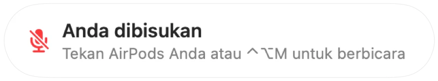

Pengingat “Anda dibisukan” untuk setiap app panggilan
Zoom memperingatkan Anda saat berbicara ketika dibisukan. Sebagian besar app lain tidak memilikinya, dan panggilan web hampir tidak pernah mengingatkannya. Anda sudah menjelaskan panjang lebar, lalu menyadari semua orang hanya menunggu.
Muffle mendeteksi suara bicara saat Anda dibisukan dan menampilkan pengingat di app apa pun. Saat panggilan menggunakan AirPods atau headset, Muffle mendengarkan mikrofon bawaan Mac Anda, dan hanya mengukur tingkat kenyaringannya. Tidak ada yang direkam.
Aktifkan pengingat
- 1
Pasang Muffle dan izinkan akses mikrofon.
- 2
Pastikan “Ingatkan saya saat berbicara ketika dibisukan” aktif di Pengaturan Muffle.
- 3
Bergabunglah ke panggilan dengan AirPods atau headset, lalu bisukan mik.
- 4
Mulailah berbicara. Pengingat “Anda dibisukan” akan muncul.

- Masuk ke panggilan video call saat mik masih dibisukan dari rapat sebelumnya? Muffle langsung mengingatkan Anda begitu panggilan dimulai.
- Suara mengetik keyboard tidak akan memicu pengingat. Hanya suara bicara yang jelas yang memicunya.
Pertanyaan umum
Apakah pengingat berfungsi dengan mikrofon bawaan Mac?
Fitur ini berfungsi saat panggilan menggunakan AirPods atau headset. Jika panggilan memakai mikrofon bawaan Mac itu sendiri, mikrofon tersebut sedang dibisukan sehingga tidak bisa mendengarkan Anda.
Apakah audio saya direkam?
Tidak. Muffle hanya mengukur tingkat kenyaringan suara dan tidak pernah menyimpan atau mengirim audio apa pun.